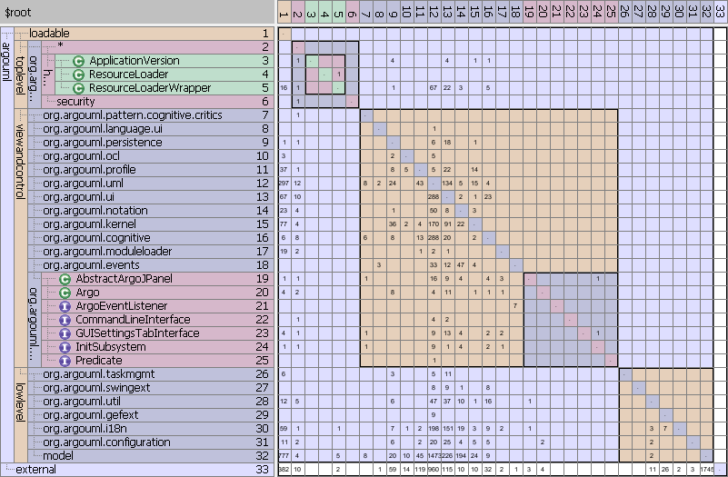

|  |
|
Vooraf
De class ApplicationVersion [3] veroorzaakt ook een aantal cyclische afhankelijkheden. De packages die deze afhankelijkheden veroorzaken zijn echter sterk gekoppeld. Het is op die reden lastig te bepalen waar ApplicationVersion het best thuishoort.